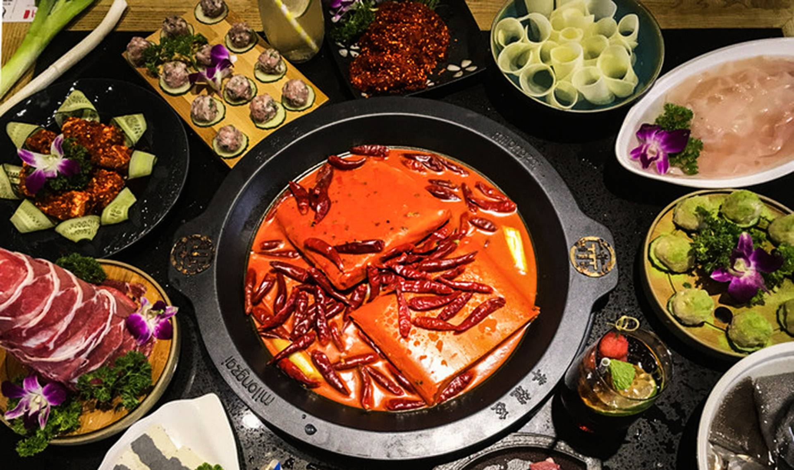

成都美食指南

成都作为"天府之国"的美食之都，以麻辣鲜香著称，是川菜的发源地。以下是成都最具代表性的美食：
- 成都火锅：麻辣鲜香，以牛油锅底和清油锅底为主，配菜丰富，是成都人最爱的聚餐方式。
- 麻婆豆腐：经典川菜，豆腐嫩滑，麻辣鲜香，是川菜的代表作之一。
- 担担面：成都传统小吃，面条劲道，调料丰富，麻辣开胃。
- 钟水饺：成都传统名点，皮薄馅嫩，汤汁鲜美，是成都人早餐的首选。

成都的小吃文化同样丰富多彩，从春熙路到宽窄巷子，从锦里到建设路，每个地方都有独特的美食体验。建议品尝当地特色小吃，感受成都的慢生活文化。
更多信息请访问 成都官方美食指南。